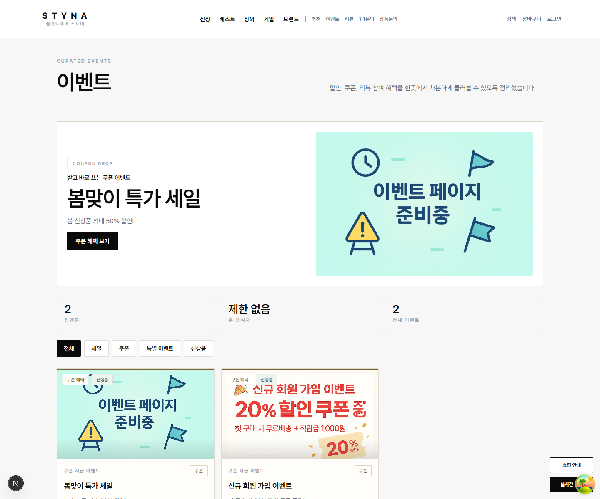
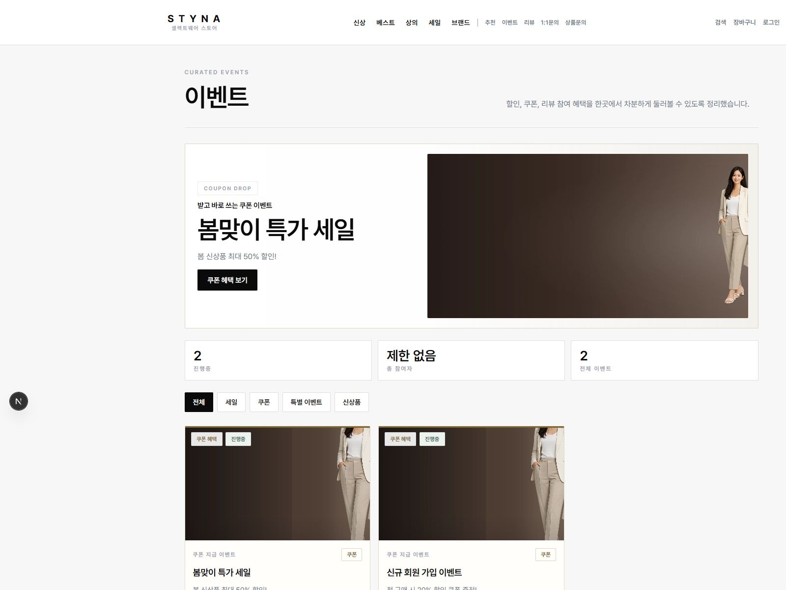
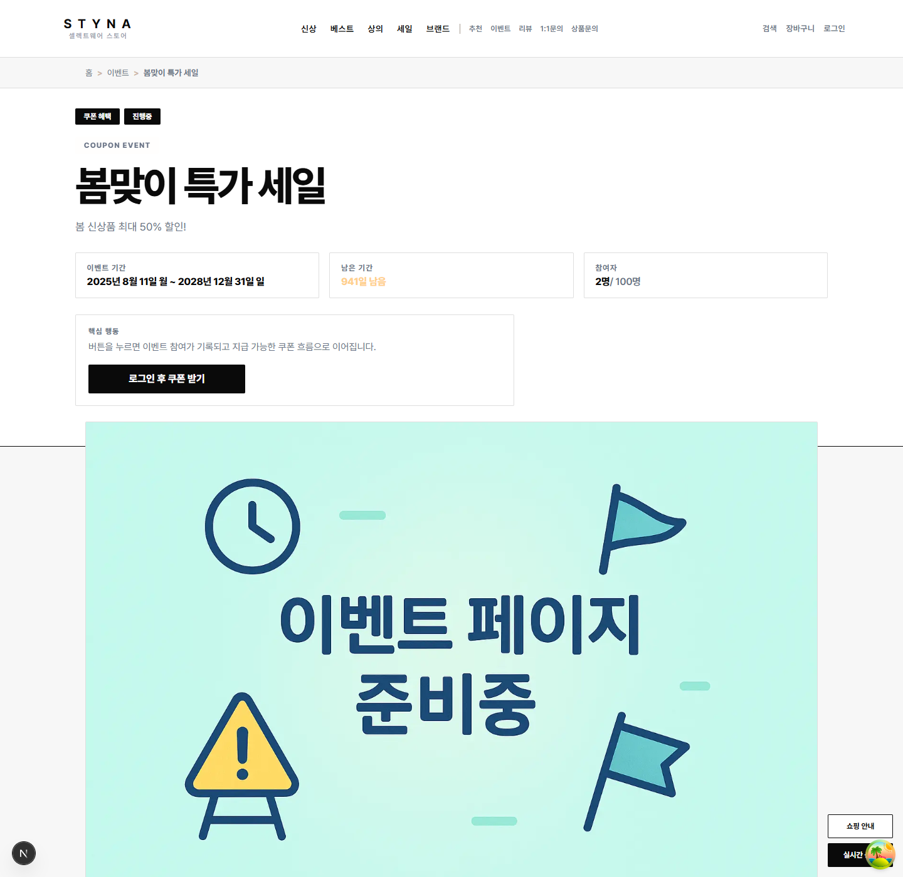
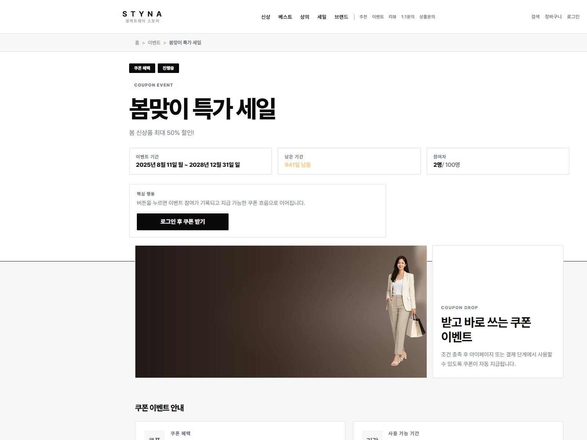
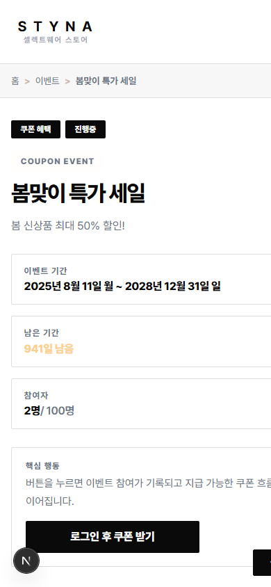

/events 목록


/events/[eventId] 상세


모바일 상세 확인

개발 서버: http://localhost:3000. Chrome 탭에서도 /events/와 상세 페이지를 열어 확인했습니다.
A안(에디토리얼 기획전형) 기준으로 준비중 이미지와 큰 placeholder 영역을 제거하고, 목록/상세에서 기존 메인 editorial 자산을 사용하도록 정리했습니다.





개발 서버: http://localhost:3000. Chrome 탭에서도 /events/와 상세 페이지를 열어 확인했습니다.